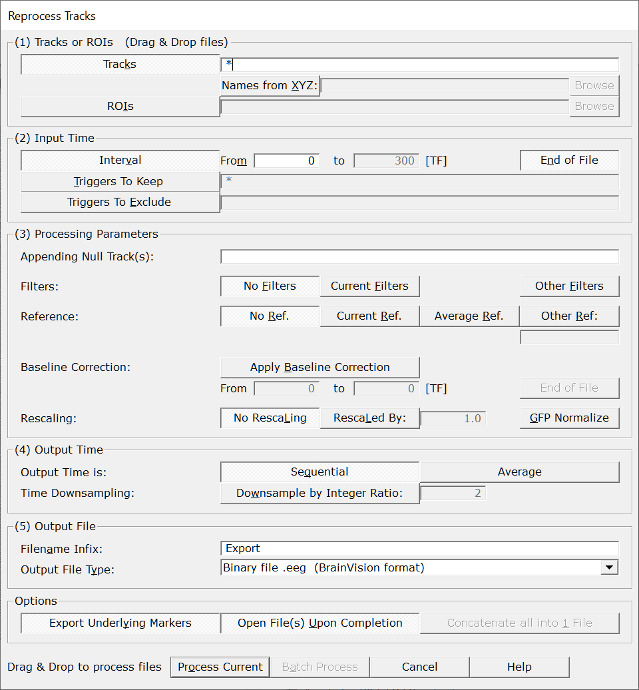
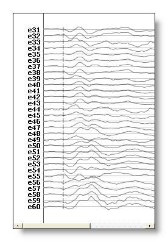
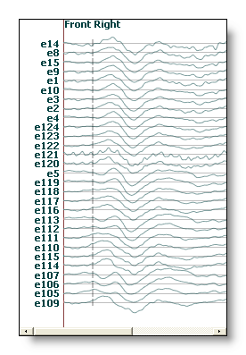
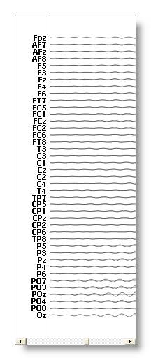

This is a versatile tool to read EEG files (or other tracks-like files), then export them to some new files after applying some basic transformations . They include things such as:
The input files can be anything that looks like tracks:
See here what the ouput files can be, plus the special case of frequency files .
Call the dialog from Tools | Export tracks menu, which is context sensitive:
Called from an EEG file, the processing will apply only to this file.
In any other case, the dialog will operate in Batch mode, requiring you to later select some files.
The following dialog pops out. Fill the parameters which are relevant for you, then click either on Process Current or Batch Process (according to how the dialog was invoked):

|
Tracks or ROIs |
|
|
Tracks |
From an opened EEG:
In Batch Mode: You can of course modify this list. See important note below about notation . |
|
Names from XYZ: |
Optionally pointing to a file with the
electrodes
coordinates
and names. The
names of the electrodes are taken
from this file
, overriding the original names from the EEG (i.e.
you can rename the electrodes). Constraints as in the link mechanism must be respected, such as same number of electrodes, same order, etc... |
|
ROIs |
The ROIs to be used in the export. Note 1: The ROIs option and the Tracks field above are mutually exclusive. Note 2: The ROIs option and the Add Null Tracks below are also mutually exclusive. |
|
Input Time |
|
|
Interval |
Export a time interval, specified in time frames . |
|
From |
First time frame to be exported. |
|
to |
Last time frame to be exported. |
|
End of File |
Automatically set the last time frame to export to the actual end of the current file . Useful in Batch Mode, if the files have different lengths. |
|
Triggers To Keep |
Only the time frames contained in the specified list of triggers / markers will be exported. |
|
Triggers To Exclude |
Only the time frames excluded from the specified list of triggers / markers will be exported. |
|
Processing Parameters |
|
|
A list of track name(s) that will be appended after the last input tracks. Its/their values will be set to 0. The intent is to add a single reference track that was not included in the recording file, though you might go beyond this and add as many tracks as you wish. Note: Appending Null Tracks and applying ROIs are mutually exclusive. |
|
|
Filters: |
Also see these notes about: |
|
No Filters |
No filtering at all, just using the raw data from the file. |
|
Use Current Filters |
Using the filters currently set in the current opened EEG. Useful as a kind of "Save what I see" feature. Note: If user has added null tracks, these tracks will also be filtered. |
|
Other Filters |
Using these specific filters, bypassing any filters that might be in current use. This will pop out the usual Filter Dialog for you to fill the relevant filters parameters. Note 1: You might have to fill the Sampling Frequency entry of this dialog, though. Note 2: If user has added null tracks, these tracks will also be filtered. |
|
Reference: |
Also see this note about the Sequence of Processing . |
|
No Reference |
Use the same reference as when the file(s) was(were) written, that is, no change in reference. |
|
Use Current Reference |
Use the reference currently in use. Useful only if the files have already been opened in Cartool, and the user has changed the reference. |
|
Average Reference |
Use the average reference, overriding current reference. Note: If user has added null tracks, these tracks will be included in the new average reference computation . |
|
Other Reference |
Use the average of the specified list of electrodes. If only one electrode is specified, this will be the reference. Note: If user has added null tracks, these tracks can also be used as reference. |
|
Baseline Correction: |
|
|
Apply Baseline Correction |
Select this to apply some baseline correction (subtracting each track with its average within a given time period). Note: If user has added null tracks, these tracks will also have be baseline-corrected. |
|
From |
First time frame of the baseline. This is an absolute value, not a relative one, and should be within the range of available time frames. Otherwise it will be clipped to these limits. |
|
to |
Last time frame of the baseline. This is an absolute value, not a relative one, and should be within the range of available time frames. Otherwise it will be clipped to these limits. The limits specified need not to be within the range of the time period exported. They can be whatever you wish, Cartool will handle all the cases gracefully. |
|
End of File |
Automatically set the last time frame of the baseline correction to the actual end of the current file. Useful in Batch Mode , if the files have different lengths. |
|
Rescaling: |
Note: If user has added null tracks, these tracks will also be rescaled. |
|
No Rescaling |
What is says. |
|
Rescaled By |
Rescale the EEG values by multiplying with the provided value. Negative factors are allowed to perform a polarity inversion. |
|
GFP Normalize |
For each EEG, compute the mean GFP (or RMS) over the selected time period, then divide the EEG values with it. See this point on positive data and also this point. |
|
Output Time |
|
|
Output Time is: |
|
|
Sequential |
The input time period, once processed, is outputted sequentially. F.ex. if the input time range selected is from 100 to 149 time frames, then the resulting output will be 50 time frames long. |
|
Average |
The input time period, once processed, is averaged, and a single value is outputted. F.ex. if the input time range selected is from 100 to 149 time frames, then the resulting output will be 1 time frame long. |
|
Time Downsampling: |
|
|
Downsample by Integer Ratio: |
Downsample the data by the specified integer ratio (>1). The resulting sampling frequency will be the original one divided by this ratio. The method used is equivalent to a CIC (Cascaded Integrator-Comb) filter, followed by a light High Pass FIR (compensation) filter, and finally the decimation itself.
Also note that downsampling is disabled in the following cases:
|
|
Output File |
|
|
Filename Infix |
The exported filenames will have these characters inserted. Default is "Export". |
|
A drop-down list with currently the following available types: |
|
|
TXT (text) |
Text file, actually the same as the .ep file except for the extension. |
|
EP (text) |
Text file, basically a plain matrix of data. See the .ep file specification. |
|
EPH (text) |
Text file, basically the same as the .ep above but with an additional header line. See the .eph file specification. |
|
SEF (binary) |
Binary file, see the .sef file specification. Useful when exporting original recording file(s), or to include the electodes / ROIs names in the new file(s). |
|
EEG (binary) |
Binary file, file format from BrainVision . This is the default option as it is a quite versatile format. |
|
EDF (binary) |
Binary file, see the .edf file specification. Useful only for data interchange, otherwise don't use (loss of precision)! |
|
RIS (binary) |
Binary file, see the .ris file specification. Used mainly if you are already testing other .ris files, and want to visualize the results in 3D. |
|
Options |
|
|
Export Underlying Markers |
Also exports the markers belonging to the selected time period, creating a .mrk file |
|
Open File(s) Upon Completion |
...of the exportation. Just be careful in Batch Mode , this could open a lot of files (read: crash)! (the original EEG files are opened one at a time, then closed when done). |
|
Concatenate all into 1 File |
If you have Batch Process a list of files, then the results will be concatenated into a single output file. Note that this happanes as the last step of the Reprocess Tracks, so what is appended depends on the parameters chosen above! Markers will be conveniently added at each starting point of the original files. |
|
Process Current |
Enabled when called from an EEG window, the exportation will apply to this file only.
This button remains disabled until all the parameter dialogs have received enough (and consistent) informations . If this is not the case, first check the current dialog: if its "Next" button is disabled, the problem is in the current dialog. Otherwise, browse the other dialogs for some missing informations. |
|
Batch Process |
Enabled when not called from an EEG window:
This button remains disabled until all the parameter dialogs have received enough (and consistent) informations . If this is not the case, first check the current dialog: if its "Next" button is disabled, the problem is in the current dialog. Otherwise, browse the other dialogs for some missing informations. |
|
Cancel |
Quit the dialog. |
|
Help |
Launch the Help to the right page (should land on this page...). |
You can get the exact Reprocess / Export Tracks subcommand options with:
cartool64.exe reprocesstracks --help
Which gives:
Re-process / Export tracks command
Usage: Cartool64.exe reprocesstracks [OPTIONS] [files]
Positionals:
files FILES... List of files
Options:
--tracks TRACKS Tracks to export Special values: * gfp dis avg
--xyzfile FILE Excludes: --roisfile
Using electrodes names from an Electrodes Coordinates file
--roisfile FILE Excludes: --nulltracks --xyzfile
Computing ROIs from a ROIs file
--timemin INTEGER Excludes: --excludetriggers --keeptriggers
Starting from time frame (Default:0)
--timemax INTEGER Excludes: --excludetriggers --keeptriggers
Ending at time frame (Default:EOF)
--keeptriggers TEXT Excludes: --timemax --excludetriggers --timemin
Using only time intervals from a triggers / markers list
--excludetriggers TEXT Excludes: --timemax --keeptriggers --timemin
Excluding time intervals from a triggers / markers list
--nulltracks TRACKS Excludes: --roisfile
List of null tracks to append
--filters TEXT A whole string of filtering options, in double quote, as coming from a verbose file
--dc,--baseline Baseline / DC correction (recommended with any High-Pass or Band-Pass filter)
--highpass FLOAT Excludes: --bandpass
High-Pass Butterworth filter
--lowpass FLOAT Excludes: --bandpass
Low-Pass Butterworth filter
--bandpass FLOATS x 2 Excludes: --highpass --lowpass
Band-Pass Butterworth filter
--order INTEGER [8 or 16] Butterworth filter order
--causal Causal filters, using only forward filtering
--notches FLOATS... Notches filter
--harmonics Needs: --notches
Adding Notches harmonics
--spatialfilter ENUM:{SpatialOutliers,SpatialOutGauss,SpatialOutWeight,SpatialIGM,SpatialIWM,SpatialMedian,SpatialIQM,SpatialMinMax} [SpatialIWM] Needs: --xyzfile
Spatial filter
--ranking Ranking data at each time point
--rectification ENUM:{abs,absolute,power,squared}
Rectification, i.e. making data all positive
--envelope FLOAT Needs: --rectification
Envelope filter on positive data (after rectification), value in [ms]
--keepabove FLOAT Thresholding data, keeping data above value
--keepbelow FLOAT Thresholding data, keeping data below value
--samplingfrequency FLOAT Overriding Sampling Frequency
--reference TRACKS Reference tracks Special values: 'none' (default), 'asinfile', 'average' or 'avgref'
--baselinecorr INTEGERS x 2 Baseline correction interval, in time frames since beginning of file
--rescaling TEXT Scaling factor Special value: 'meangfp'
--sequential Excludes: --average
Sequential output Default option
--average Excludes: --sequential
Averaging the time dimension
--downsampling INTEGER Downsampling ratio
--input-dir PATH:DIR Input directory
--output-dir PATH Output directory
--infix TEXT Infix inserted into the output file names
--ext,--extension ENUM:{txt,ep,eph,sef,eeg,edf,ris} [eeg]
Output file extension
--nomarkers Not saving the markers to file
--concatenate Concatenate all output into a single file
--verbose Excludes: --quiet Verbose mode
--quiet Excludes: --verbose Quiet mode
--overwrite Excludes: --no-overwrite
Overwrite existing files
--no-overwrite Excludes: --overwrite
Do not overwrite existing files
-h,--help This message
Band-Pass option excludes both High-Pass and Low-Pass options. However, it is currently allowed to specify both High-Pass and Low-Pass options, which will be internally combined into a proper High-Pass.
For a single High-Pass or Low-Pass filter, the order, if overridden, must be an even value. Current default value is 8.
For a Band-Pass filter, the order must be a multiple of 4 , as it basically sums up the high and low pass orders together. Which means the default is 8+8=16. Note that this does not follow the Matlab convention, which would erroneously show 8 instead...
Saving files to another format, f.ex. to BrainVision .eeg:
cartool64.exe reprocesstracks --infix=NewExt --ext=eeg -- <file1> <file2> <file3>
Renaming the electrodes, "borrowing" actual names from a .xyz file:
cartool64.exe reprocesstracks --xyzfile=electrodesfile.xyz --infix=Renamed --ext=eeg -- <file1> <file2> <file3>
Cropping the time range, from time frame 100 to 499; cropping from time frame 200 up to end-of-file (note the missing --timemax option in the latter case):
cartool64.exe reprocesstracks --timemin=100 --timemax=499 --infix=Cropped -- <file1> <file2> <file3> cartool64.exe reprocesstracks --timemin=200 --infix=Cropped -- <file1> <file2> <file3>
Keeping only some epochs, labelled as "Good" markers, from the time line:
cartool64.exe reprocesstracks --keeptriggers=Good --infix=OnlyGoodies -- <file1> <file2> <file3>
Deleting some epochs, labelled as "Bad" or "Blink" markers, from the time line:
cartool64.exe reprocesstracks --excludetriggers=Bad,Blink --infix=NoBaddies -- <file1> <file2> <file3>
Appending a null track called "MyRef":
cartool64.exe reprocesstracks --nulltracks=MyRef --infix=Nullos -- <file1> <file2> <file3>
Changing the reference to Cz, using a .xyz file to get the names right; setting an Average Reference:
cartool64.exe reprocesstracks --xyzfile=electrodesfile.xyz --reference=Cz --Infix=RefCz -- <file1> <file2> <file3> cartool64.exe reprocesstracks --reference=average --Infix=RefAvg -- <file1> <file2> <file3>
Downsampling files by a factor of 4, f.ex. from a sampling frequency of 1000 Hz down to 250 Hz:
cartool64.exe reprocesstracks --downsampling=4 --infix=Down -- <file1> <file2> <file3>
Concatenating files into a single file:
cartool64.exe reprocesstracks --concatenate --infix=Concat -- <file1> <file2> <file3>
You have access to all the filters from the EEG Filters Dialog .
For example, a typical band-pass for EEG (note the DC removal, for safety reasons):
cartool64.exe reprocesstracks --dc --bandpass=1,40 --notch=50 --harmonics --order=16 --infix=BandPass -- <file1> <file2> <file3>
Applying the default Spatial Filter of Cartool. Attention to the EEG and XYZ dimensions, which sould match exactly, especially if you added some null tracks:
cartool64.exe reprocesstracks --xyzfile=electrodesfile.xyz --spatialfilter --infix=Spatial -- <file1> <file2> <file3>
Applying some rectification + envelope, with a time window of 100ms:
cartool64.exe reprocesstracks --rectification=power --envelope=100 --infix=Envelope -- <file1> <file2> <file3>
Thresholding the data, ranking and keeping data above 0.95; keeping data either below -1 or above 1; keeping data above -1 and below 1:
cartool64.exe reprocesstracks --ranking --keepabove=0.95 --infix=Significant5 -- <file1> <file2> <file3> cartool64.exe reprocesstracks --keepbelow=-1 --keepabove=1 --infix=OutsideInterval -- <file1> <file2> <file3> cartool64.exe reprocesstracks --keepabove=-1 --keepbelow=1 --infix=InsideInterval -- <file1> <file2> <file3>
The various available processing follow a very precise sequence, which is:
Reading the raw tracks from file
Cropping the time-line (interval, keeping triggers, or excluding triggers)
Appending null track(s).
All the following steps will make use of
these new tracks!
Cartool uses a classic sliding window method, which is mandatory to avoid artifacts, especially with high-pass filter:
to export time frame t, read data between t - filtersize and t + filtersize
filter, correct, etc...
save only the time frame value at t
repeat for all time frames
As a consequence, Cartool reads / filters / processes way more points than are actually written to file. This is the only way to ensure the results are correct, so be patient, it has to be done only once after all...
filtersize depends on the sampling frequency of the current file. The higher the sampling frequency, the bigger the filtersize variable, the longer the computation.
The Spatial Filter depends on a .xyz coordinates file to operate, as it needs the spatial locations of each and every electrodes. It is also requires that the number of tracks in the EEG file and the number of electrodes in the .xyz file be exactly the same . Cartool enforces that for you all the time, so nothing to worry here.
However, in case the user required for an additional null track , the EEG has suddenly one more dimension. To properly apply any Spatial Filter, the user should then select the Other Filter option , and drop a correct .xyz file with an additional electrode, too. This way both EEG and electrodes coordinates dimensions will match again.
In case of mismatch, Cartool will likely complain, skip the Spatial Filter step(!), and add an error message in the .vrb verbose file...
If a .rois file has been provided (see Creating ROIs), all members of a given roi are averaged together as a final step. Then only the averaged value is written to file.
If you intend to do some stats later on these roi-ed files, think twice! In fact, it is a far better practice to not compute the rois yourself (for the stats), but let the Statistics processing do it for you . The main problem being that data normalization that will be wrong, as the original data will be lost, so will be the original GFP. Plus, why fill your drive with another set of files?
But if you just want ROIs for some display purpose, or re-ordering your tracks, just proceed!
Noteworthy is a side-effect of Exporting with ROIs, which is the re-ordering of the tracks that occurs. Within each roi, all tracks will follow the exact sequence given in the .rois file. See an example, first the original order, then one roi with a quarter of the electrodes:

You can:
Enumerate the tracks one by one: e1 e2 e3
The order is relevant, this is not equivalent to e2 e3 e1!
Use whatever separator you like: comma, semi-colon, space, tab.
Use interval notation: e1-e20
Which means all tracks from e1 up to e20, both included, and in the order found in the file.
You can of crouse combine the two notations: e3 e5 e10-e20
With interval notation, the ordering is the one found in the file you are processing, and is by no mean lexicographic (à la dictionary). So in this example C1-C2 means C1, Cz, C2; and T3-T4 means T3, C3, C1, Cz, C2, C4, T4:

You can export the computed tracks by using any of the following predefined names:
See the Results paragraph.
Exported files are written in the same directories as their sources. File names are inserted with the infix string, which is by default "Export", followed by the appropriate file extension.
In case the input is a Freq file , each of the stored frequency will be output in a separate file . The resulting filenames will include which frequency has been used, f.ex. "MyFile.4-8 Hz.EP", "MyFile.8-14 Hz.EP", "MyFile.14-20 Hz.EP".
Verbose file .vrb (text), showing all the parameters.